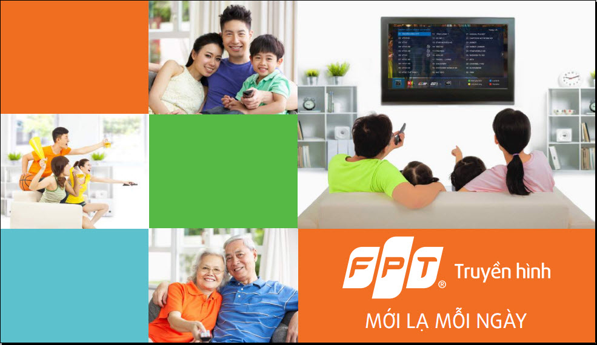
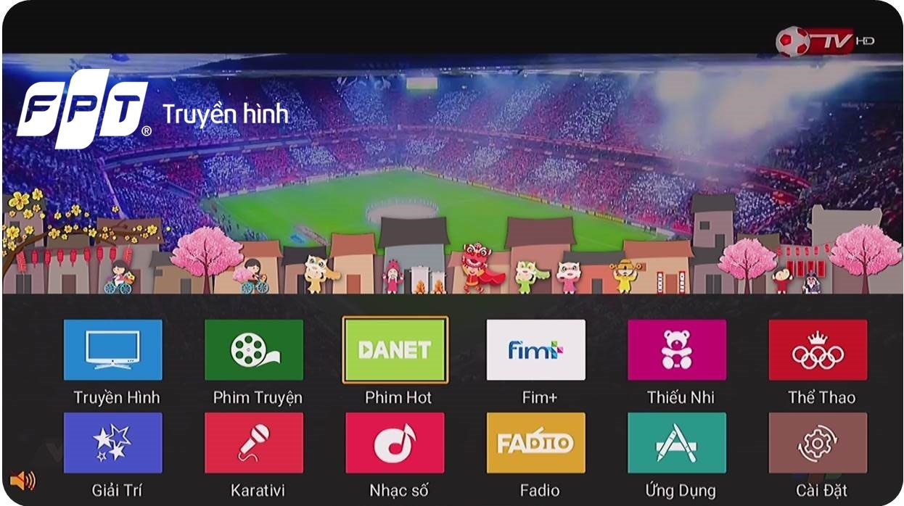

Sử dụng truyền hình FPT có cần kết nối internet không?
Truyền hình FPT đang trở nên ngày càng phổ biến. Dịch vụ Truyền hình FPT không chỉ được sử dụng ở các thành phố lớn mà còn lắp đặt rộng rãi.Vậy sử dụng truyền hình FPT có cần kết nối internet không?
Hiện nay, truyền hình FPT đang trở nên ngày càng phổ biến. Dịch vụ này không chỉ được sử dụng ở các thành phố lớn mà còn lắp đặt rộng rãi ở các vùng nông thôn trên khắp cả nước. Vậy sử dụng truyền hình FPT có cần kết nối internet không? Bài viết dưới đây chúng tôi sẽ giúp bạn giải đáp.

Sử dụng truyền hình FPT có cần kết nối internet không?
Truyền hình FPT là dịch vụ truyền hình chạy trên công nghệ IPTV, tức là nó chạy trên đường truyền internet. Với công nghệ hoàn toàn mới này, khách hàng sẽ không bị phụ thuộc vào nhiều yếu tố bất lợi như các dịch vụ truyền hình vệ tinh, truyền hình truyền thống đang cung cấp.
Khi lắp đặt truyền hình FPT, bạn sẽ được sử dụng nhiều dịch vụ hơn, không chỉ cung cấp các kênh truyền hình phổ biến, mà chúng tôi sẽ biến chiếc tivi nhà bạn thành Smart Tivi. Như vậy, chỉ với một chiếc tivi thông thường và khoản chi phí nhỏ hàng tháng bạn đã có thể sở hữu một dịch vụ tuyệt vời hơn hẳn Smart Tivi.

Tuy nhiên, chúng ta cần lưu ý, truyền hình FPT dù lắp đặt ở bất kỳ địa phương nào thì cũng cần phải có kết nối Internet mới sử dụng được. Và internet phải là do FPT Telecom cung cấp, không sử dụng được trên đường truyền của nhà cung cấp mạng khác. Ngoài ra, bạn có thể lựa chọn sử dụng nguyên dịch vụ truyền hình cáp của FPT hoặc sử dụng cả Internet và truyền hình FPT cùng một lúc.
Nếu khách hàng lựa truyền hình cáp thì FPT sẽ cung cấp dịch vụ cho bạn theo đúng công nghệ truyền hình Internet. Nhưng bạn chỉ sử dụng được truyền hình, còn đường truyền internet chỉ phục vụ cho kết nối truyền hình, không dùng được vào các mục đích khác như sử dụng cho máy tính và điện thoại di động. FPT sẽ mở đường truyền Internet khi quý khách hàng có nhu cầu.
CÔNG TY CỔ PHẦN VIỄN THÔNG FPT
Địa chỉ: Số 47 Ngô Gia Tự, TP
Điện thoại: 0976 654 045